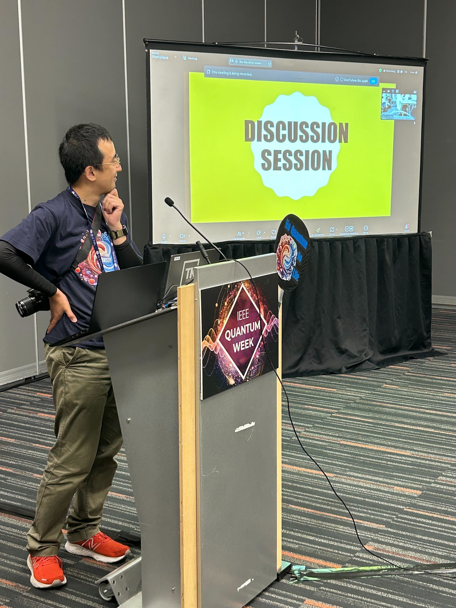
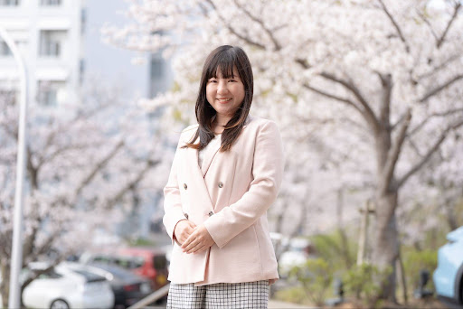
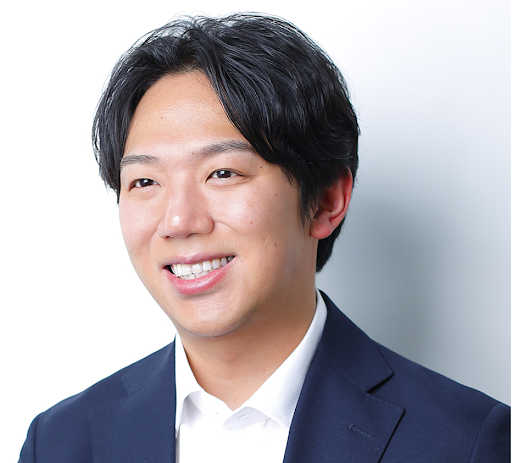
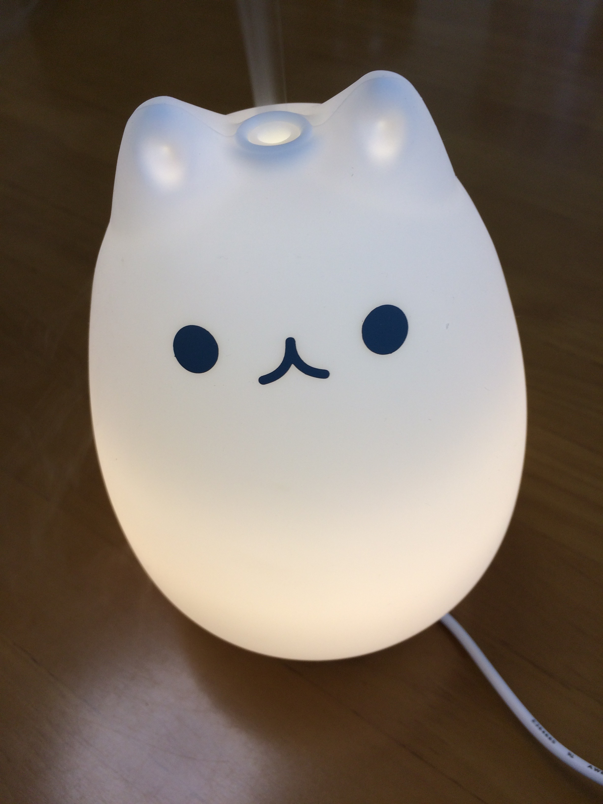
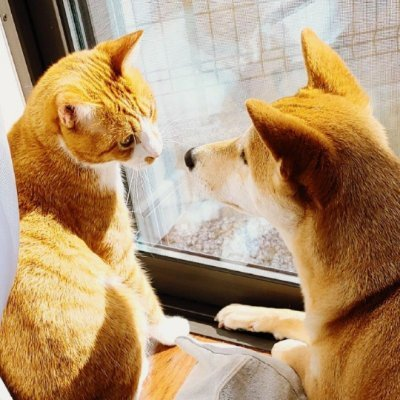
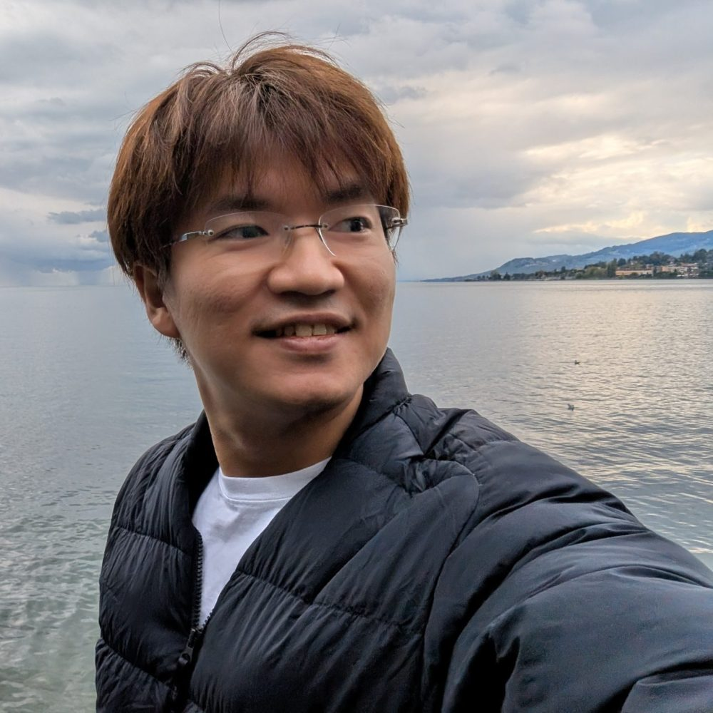
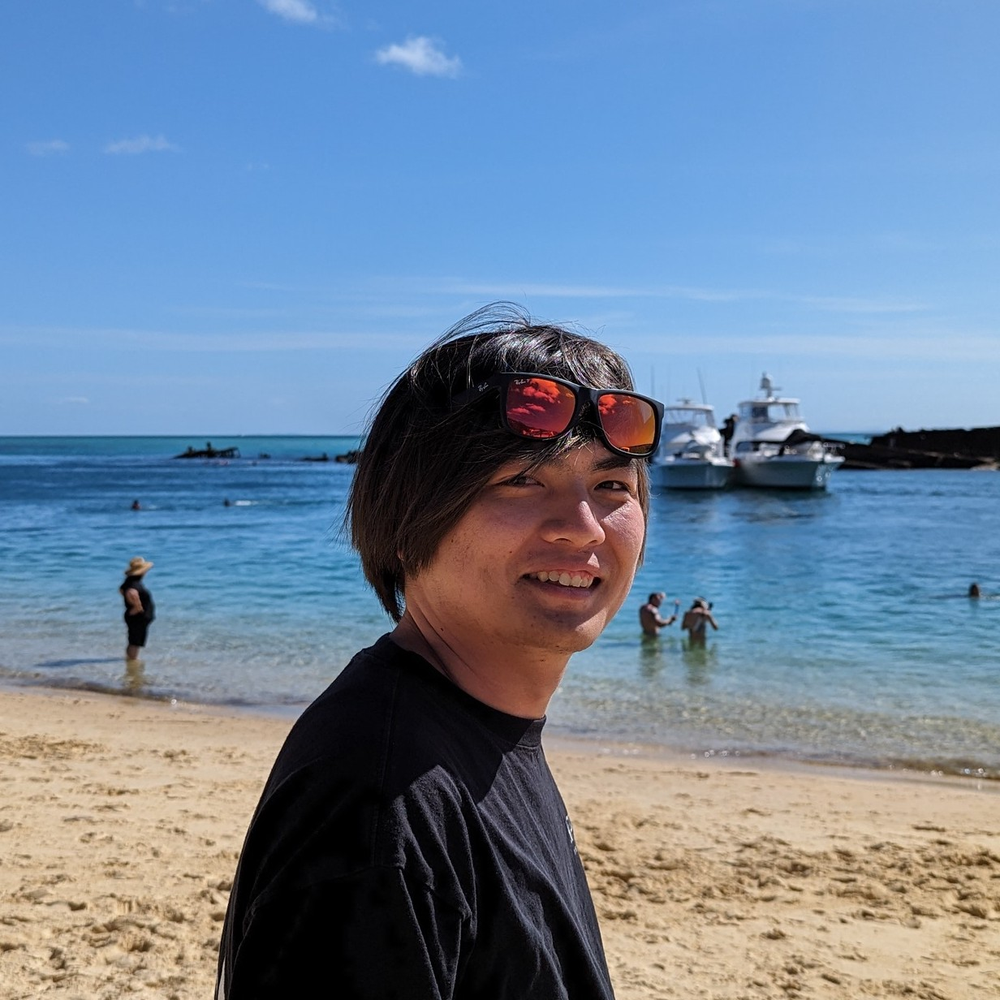

森下翔
大阪大学社会技術共創研究センター
森下翔は大阪大学社会技術共創研究センター講師。科学技術人類学を専門とし、地球科学、インドネシア天文学、合成生物学、霊長類学、量子科学など幅広い分野でフィールドワークと共同研究を行ってきました。2020年からRRI研究に取り組み、現在は量子科学分野におけるRRIプロジェクトのリーダーを務めています。
メンバー紹介｜Requid Osaka

大阪大学社会技術共創研究センター
森下翔は大阪大学社会技術共創研究センター講師。科学技術人類学を専門とし、地球科学、インドネシア天文学、合成生物学、霊長類学、量子科学など幅広い分野でフィールドワークと共同研究を行ってきました。2020年からRRI研究に取り組み、現在は量子科学分野におけるRRIプロジェクトのリーダーを務めています。

大阪大学社会技術共創研究センター
肥後楽は大阪大学社会技術共創研究センター助教。新興科学技術における責任ある研究・イノベーション（RRI）を専門とし、アウトリーチ、市民参加、産業界を含む多様なステークホルダーとの連携を通じた学術知の社会実装に取り組んでいます。

大阪大学社会技術共創研究センター
長門裕介は大阪大学社会技術共創研究センター講師。量子科学と疑似科学の交点を、投資や政策との関係を含めて研究しています。量子イノベーション分野における「ハイプ（過度な期待）」の倫理的含意を検討した論文を発表しています。

神戸大学大学院人文学研究科
神戸大学大学院博士後期課程。数年前から量子情報科学の領域に関わるようになり，現在は実験系の構築に際してどのような実践的知識が用いられているのかを明らかにするため，実験室へ通って作業の過程を撮影させてもらっています。量子情報科学は私にとって，歴史学よりもさらに離れた学術領域となりますが，参与観察を通じて徐々に理解を深めようとしています。

大阪大学社会技術共創研究センター
榎本啄杜は大阪大学社会技術共創研究センター特任研究員。専門は科学哲学・情報哲学です。「情報」という概念が分野ごとに多様に用いられることに関心があり、量子情報科学はその代表例だと考えています。また、量子情報科学をめぐる疑似科学が従来型の疑似科学と異なる特徴を示すかどうかも検討しています。

慶応義塾大学大学院メディアデザイン研究科
慶応義塾大学で博士（メディアデザイン学）を取得。2018年にmercari R4Dのシニアリサーチャーに着任し、2022年から慶応義塾大学大学院政策・メディア研究科特任准教授を兼務。2025年4月より慶応義塾大学大学院メディアデザイン研究科准教授。Quantum Internet Task Forceディレクター、WIDE Project理事、情報処理学会量子ソフトウェア研究会運営委員、電子情報通信学会量子通信ネットワーク時限研究専門委員会専門委員も務めています。

Mercari R4D
URL: https://tensornetwork-qec.jp/
小林 史佳は、量子情報および量子誤り訂正を専門とする、Mercari R4Dのリサーチャーであり、日本学術振興会特別研究員（PD）です。Mercari R4Dにおける量子情報技術の研究に取り組み、社会と産業が量子技術を基盤として再編される「量子ファースト時代」の実現を目指しています。